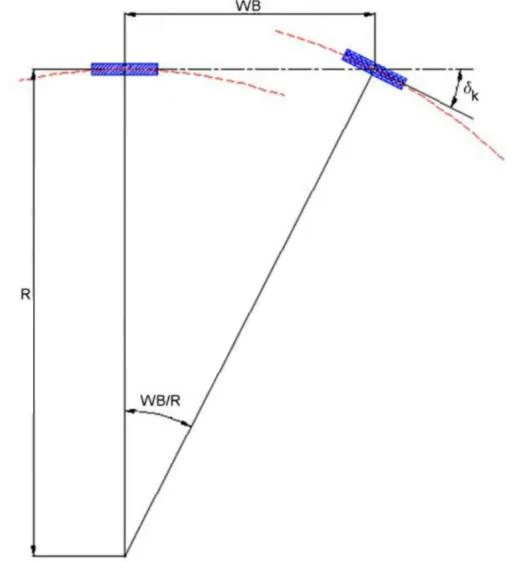
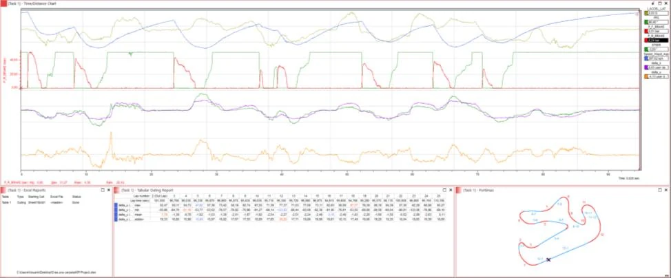

November 2024 · Data analysis and KPI project · Individual
Understeer-angle KPI from LMP2 race data
Using real outing data from an Oreca 07 LMP2 at Portimão, I built an understeer-angle channel in PI Toolbox from vehicle speed, lateral acceleration and steering. I exported its per-lap statistics to Excel and turned them into a dashboard that shows how the car's balance moved through a 26-lap stint, as an objective counterpart to driver feedback.
- PI Toolbox
- Microsoft Excel

01Why this KPI
A driver's description of understeer or oversteer at each phase of the corner is one of the most useful inputs an engineer gets, but it is subjective and changes between drivers and conditions. A KPI should be measurable, relevant to the objective, actionable, tracked over a defined period and comparable over time. The understeer angle meets those criteria and needs only the most basic channels on a professional race car, so the method transfers to almost any car.
02Math channels
The corner radius comes from speed and lateral acceleration. The bicycle model gives the kinematic (Ackermann) steer angle needed to follow that radius, and the understeer angle is the difference between the steering input and that kinematic angle. Positive values mean understeer and negative values mean oversteer.
WB = 3.005 m, the Oreca 07 wheelbase.

In PI Toolbox I implemented the three channels with PI Math, converting speed from km/h to m/s, lateral acceleration from G to m/s² and the angle from radians to degrees:
// Corner_r: corner radius [m]
(([Speed_Wspd_App] / 3.6) ^ 2) / ([I_ACCEL_LAT] * 9.81)
// Delta_k: Ackermann angle [deg]
atan(3.005 / [corner_r]) * (180 / 3.141592)
// Delta_u: understeer angle [deg]
[STEER] - [delta_k]The analysis layout shows speed and lateral acceleration, throttle and brake (as a reference for driving technique), steering against the Ackermann angle, and the understeer angle on a time or distance base. Below them sit an Excel export window, a tabular outing report with per-lap statistics, and a track map with each straight and corner labelled.

03From laps to a dashboard
For each lap I exported the maximum, minimum, mean and standard deviation of the understeer angle into Excel. I then added an oversteer column (the absolute value of the minimum), a balance flag showing whether understeer or oversteer dominated the lap, and outing averages. The dashboard turns that table into five views:
- Peaks per lap. Maximum understeer and oversteer side by side, so unusual laps stand out. Laps 12 and 23 had oversteer peaks well above the rest, which could indicate a spin or a large snap.
- Balance against lap time. The mean understeer angle per lap. The first half of the stint trended towards oversteer, possibly from rear tyres overheating, but the fastest laps came with high oversteer values, so the trend was not costing time.
- Standard deviation against lap time. A proxy for how aggressively the car was driven. More deviation generally came with faster laps, but the fastest lap (lap 18) had notably less, so the data did not support a firm conclusion.
- Balance split. The share of laps dominated by understeer or oversteer, for comparing stints and tyre compounds.
- Stint summary. Laps, peak understeer and oversteer, mean and deviation for the whole outing, again for comparing runs in different conditions.
04Limitations and next steps
This is one of the simplest ways to build an understeer KPI. The formulation holds only for small steering angles and with the tyres in their linear range, so it gives a general picture of the car's behaviour, and its conclusions need to be read with caution.
The natural extensions are statistics per corner rather than per lap, using the labelled track map, and comparing the same KPI across stints and tyre compounds, which is what the dashboard's summary views were built for.
Tools: PI Toolbox (PI Math channels, layouts, Excel export), Microsoft Excel.
Source: P. Lacasta Sauret, Data analysis & KPI: Understeer angle, 9 November 2024, and the accompanying Excel workbook.